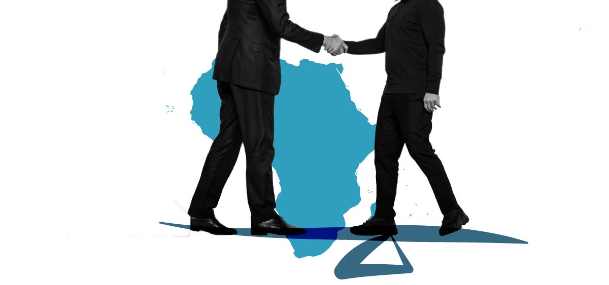
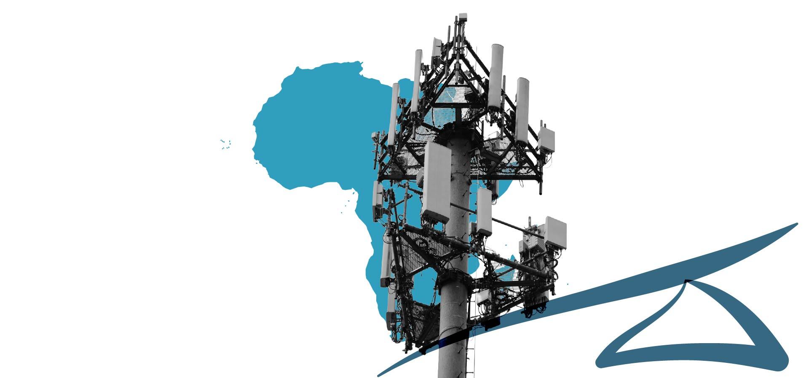
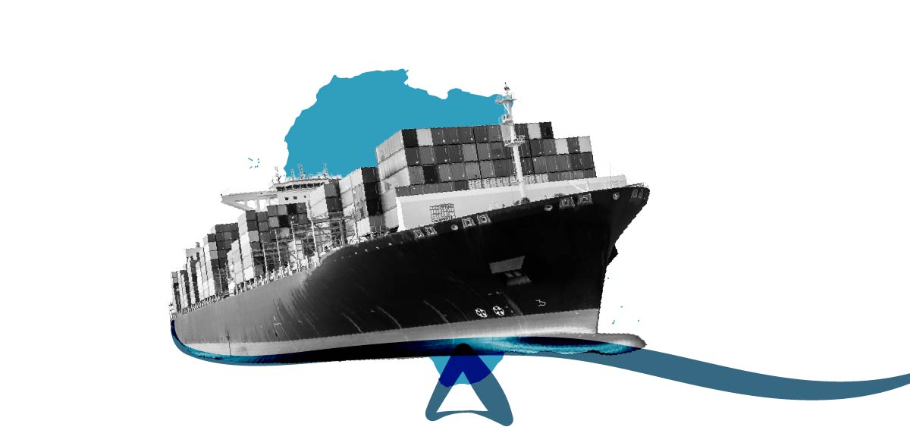
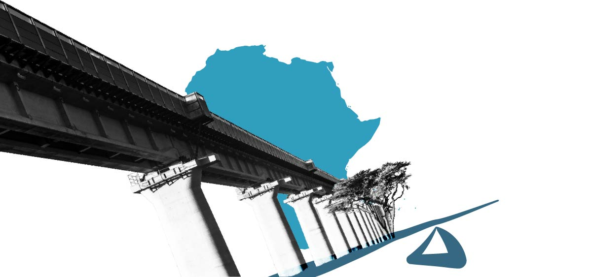
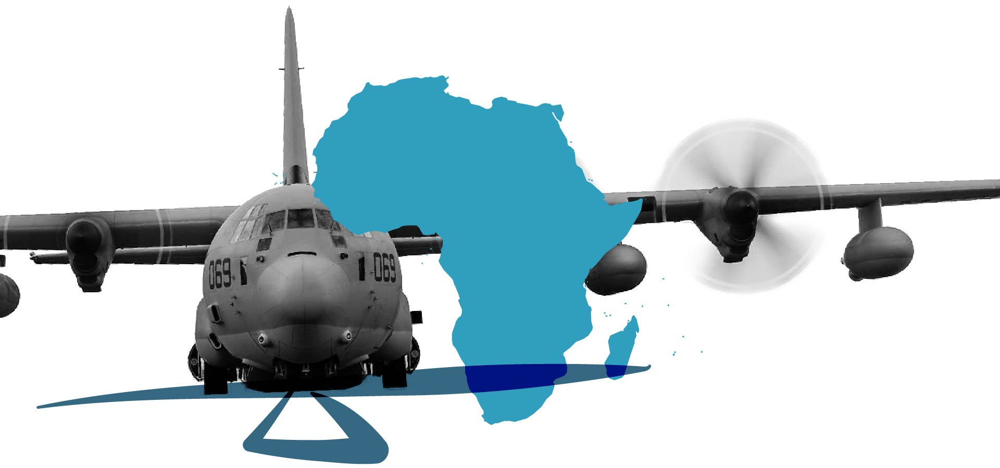
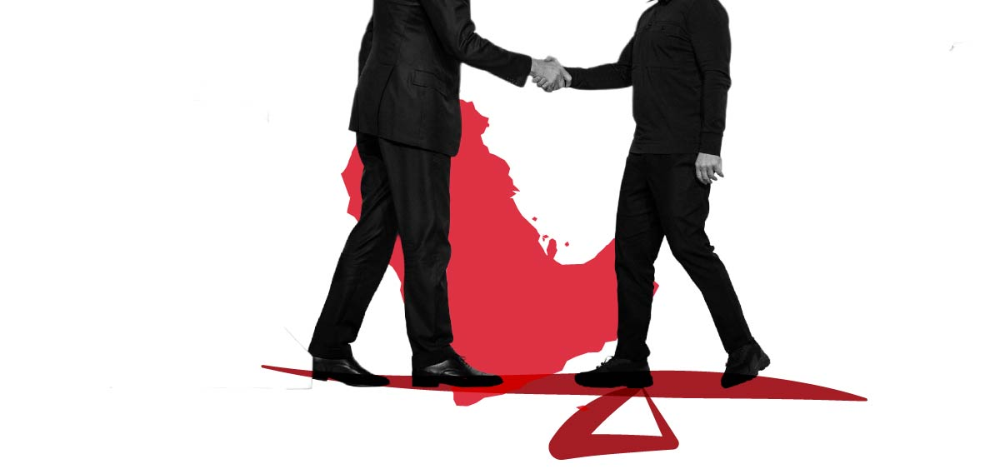
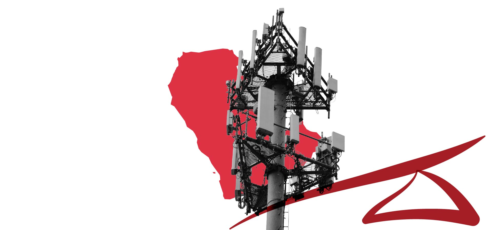
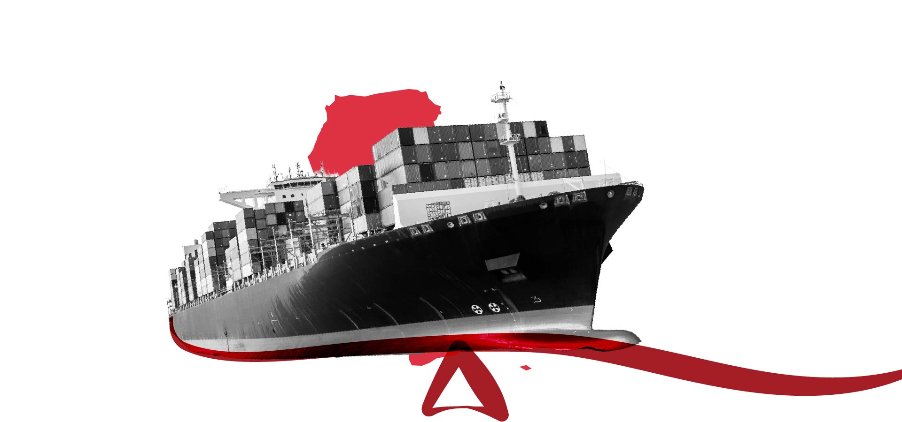
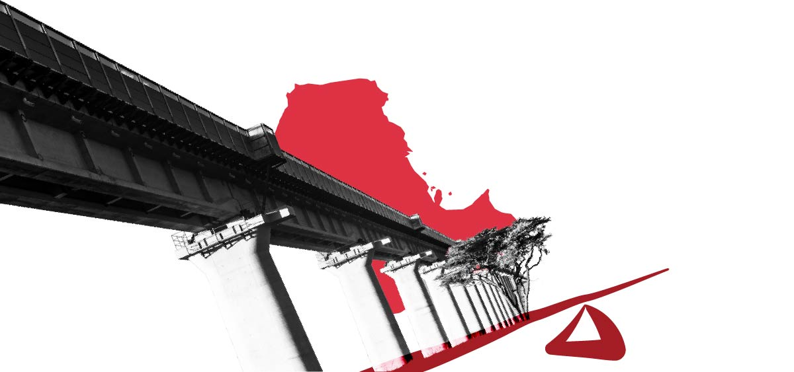
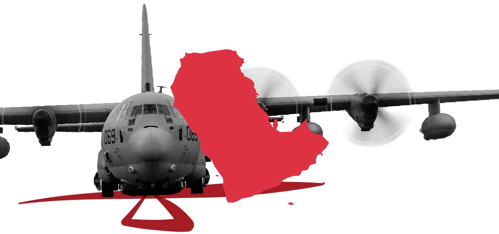

Europe has an unusually broad and deep-rooted presence across Africa, and the Middle East and the Gulf, although its position differs between the two regions. In Africa, it remains an incumbent heavyweight even as other actors’ involvement grows. In the Middle East and the Gulf, it is one of several leading partners, alongside China in trade, the US in security and Türkiye in diplomacy. In an increasingly competitive geopolitical environment, Europe’s challenge is less to expand this presence than to leverage it better.
Three patterns help to explain why:
First, Europe’s scale is collective. EU institutions and Member States bring complementary assets that together give Europe a reach no other single actor matches, from diplomatic and cultural networks to trade, investment and development finance. Individual Member States retain significant strengths in selected fields, but it is collectively that Europe operates on the scale of the largest external actors across multiple dimensions. These assets, however, are not always joined up effectively.
Second, Europe’s overall position is broadly resilient, but some of its advantages are narrowing. It holds its economic ground in trade, but its shares of recorded investment and its aid have fallen in both regions, while in some strategic sectors such as green energy products other actors are moving faster. Beyond economics, leadership is increasingly distributed: the EU records the most high-level visits to Africa, but China has the widest diplomatic network there; in the Middle East and the Gulf, Türkiye has the broadest diplomatic footprint and the US remains the main security partner.
Third, presence does not automatically translate into favourable perceptions or political alignment. Europe’s extensive institutional, economic and people-to-people ties do not give it a comparable advantage in public opinion: in the African countries surveyed, China’s influence was viewed more positively than the EU.
Levers of Influence maps how the EU and selected external actors(1) engage through diplomacy, soft power, economic ties and military cooperation. It identifies where Europe remains strong, where its position is coming under pressure, and where interests converge.
Depiction of borders is indicative in maps, and it does not support any territorial claim.
Taken together, the findings point to four priorities:
The landscape of external partnerships across Africa, the Middle East and the Gulf is becoming more plural, but no new hierarchy of influence is emerging. No actor leads across diplomacy, soft power, trade, finance, infrastructure and security, and advantages in one domain do not necessarily carry over to others.
The EU retains substantial weight across both regions, but that weight translates unevenly into political alignment, favourable perceptions and sectoral advantage. Its comparative advantage lies in the breadth of its relationships rather than dominance in every domain – and that breadth is collective. Taken together, EU institutions and Member States combine economic, diplomatic, cultural and security ties on a scale that none could sustain alone across both regions. In Africa, the EU remains the leading trading partner, largest recorded FDI counterpart and largest provider of official finance among the actors tracked. But these strengths are uneven: its trade lead is heavily anchored in North Africa, while China leads across sub-Saharan Africa, and EU Member States contribute far fewer personnel to UN peacekeeping than India or China. In the Middle East and the Gulf, Europe remains the largest recorded FDI counterpart and a major commercial and development partner, but leadership is distributed: China leads goods trade, Türkiye has the widest diplomatic footprint and the US remains the main security partner. European net ODA has also declined in both regions. The EU therefore retains exceptional reach, but increasingly operates in fields where other actors hold stronger sectoral or regional positions.
China combines unusually broad commercial and diplomatic strengths. It has embassies in, and formalised partnerships with, all 53 African states it recognises, it is the largest trading partner of the Middle East and the Gulf, and supplies three-quarters of Africa’s green-energy imports. Its position is nevertheless uneven across instruments. Recorded Chinese FDI in Africa remains far below EU’s, and although China is the continent’s largest official bilateral creditor, repayments exceeded new lending in 2022–24. In Africa, however, China is also expanding its security presence, not only through its long-established military base in Djibouti but also through military exercises with Egypt and countries in the western Indian Ocean region.
The United States has a more security-centred profile, particularly in the Middle East and the Gulf, where it remains the main security partner, largest arms supplier and, in 2025, maintained the largest military deployment. Its economic role is more mixed: it was the second-largest aid provider to Africa among the actors examined in 2022–24 and retains important investment positions, but accounts for under 5% of Africa’s trade and has a relatively small, largely legacy bilateral creditor position.
The Gulf states have increasingly prominent but differentiated roles as investors, donors and security partners. Their recorded investment in Africa rose by around 40%, driven largely by the UAE, while Saudi Arabia is a major, predominantly grant-based donor. In Africa, Gulf countries complement their diplomatic outreach with a much wider network of development and humanitarian projects. Within the Gulf, regional governments are also taking a more active role in organising security cooperation with multiple external partners. Israel has a distinct profile: it is the region’s only net exporter of high-tech goods, while its security relationships in Africa have expanded, with recent arms transfers concentrated mainly in Morocco.
Türkiye, India, Japan and South Korea have distinct strengths. Türkiye combines the widest diplomatic network in the Middle East and the Gulf with extensive educational, migration, development and security ties both in Africa and the Middle East and the Gulf. India’s overall trade share in Africa is relatively modest, but it plays an outsized role in cereal and selected pharmaceutical supplies and deploys more UN peacekeepers there than any other actor examined. Japan stands out for continued lending and a near-doubling of its aid in the Middle East. South Korea has a smaller financial footprint but a highly concessional lending portfolio, while its arms transfers to the Gulf (mainly to the UAE) rose sharply between 2018–21 and 2022–25.
Russia and Iran have more concentrated official profiles. Russia’s recorded arms transfers to Africa fell by more than four-fifths between the two comparison periods, while its military presence is concentrated in a small number of countries, increasingly through Africa Corps. Its economic footprint is also limited, although it occupies important niches: despite accounting for less than 1% of Africa’s trade, Russia supplies around 12% of its cereal imports. At the same time, Russia has maintained and expanded its diplomacy and soft power outreach, notably through the Russia-Africa summits, Russian Houses and development projects. Iran’s engagement is narrower but has also expanded in selected areas. Its cultural presence is concentrated particularly in West and East Africa, through the Islamic Culture and Communication Organization. Its security engagement has also grown, including arms transfers to East Africa in recent years.
Across the analysis, the nature and concentration of a relationship can matter as much as its overall scale. India accounts for only around 6% of Africa’s total trade but supplies about 14% of its cereal and selected pharmaceutical imports while engaging with the regions both through soft power and military cooperation – in particular through exercises in the Indian Ocean. In the lower- and middle-income Middle East, Türkiye supplies nearly a quarter of agri-food imports despite not being the largest overall trading partner. The same distinction appears in finance: the largest creditor is not necessarily the largest source of new lending. Aggregate rankings can therefore obscure relationships that are particularly important to individual countries or sectors, and through which dependencies and potential leverage may arise.
Partner countries actively shape these relationships. Governments in both regions combine partnerships with different external actors rather than aligning consistently with any one of them across economic, diplomatic and security domains. At the UN, alignment varies sharply by issue: abstention on Ukraine remains widespread, while African states and most Middle Eastern and Gulf states have aligned with the EU’s average position on Gaza roughly four times in five since 2023. Public attitudes are similarly complex. In the African countries surveyed by Afrobarometer, 62% of respondents view China’s influence positively, compared with 50% for the EU; in Iraq and Lebanon, largely negative views of the US nevertheless coexist with a preference for stronger economic ties.
For the EU, the challenge is therefore less to expand its presence across the board than to use its existing weight more selectively and coherently. This means acting collectively where scale matters, concentrating effort around partners’ priorities, turning existing relationships into tangible benefits and making those results visible, and helping partners make greater use of access to the European market. The objective is not to match every external actor in every field, but to identify where Europe’s collective assets offer distinctive value and deploy them accordingly.

The courting of African countries has intensified in recent years, as reflected not only in the expansion of diplomatic networks but also in high-level visits, formal partnerships and a growing number of proposals for dedicated summits. African countries, however, are strongly asserting their agency by diversifying their partnerships and through voting patterns at the UN General Assembly that reflect selective engagement or abstention in line with their interests.

Soft power is the ability to attract and persuade through culture, ideas and preferences, and to project a favourable image. In Africa, external actors extend their reach through development cooperation, cultural institutes and people-to-people ties fostered by students and migrants. The EU stands out for the breadth of its outreach, but as other actors expand their presence, coordination and Team Europe branding become increasingly important.

Africa’s trade relationships remain anchored in the EU, but aggregate shares conceal important shifts. China continued to strengthen its position, particularly in sub-Saharan Africa and selected strategic supply chains, while India, Türkiye and Gulf actors are gaining ground in specific sectors and markets. Changing trade balances and the concentration of key suppliers and export destinations showcase how commercial ties can create dependencies and potential leverage.

External finance connects African economies to global partners through investment, aid, remittances and debt. Europe retained the broadest financial footprint among the actors considered, leading in aid and recorded investment positions, although the US had narrowed the aid gap. China remained Africa’s largest bilateral creditor despite net repayments, while multilateral finance was gaining importance. Investment relationships were also highly concentrated, with individual external actors holding dominant positions in several African economies.
Infrastructure engagement is assessed through World Bank data on private participation (PPI) and contract awards, providing a window onto external actors’ roles. Taken together, the two indicators point to contrasting patterns: sponsors registered in EU Member States have the broadest footprint in private participation, while Chinese-registered firms dominate World Bank-financed construction awards. These differences are also geographic: sponsorship is relatively dispersed, whereas construction awards are more concentrated by actor and country.

Military cooperation in Africa is concentrated in a few hotspots where several external actors conduct military exercises, including naval exercises in the Gulf of Guinea and the Gulf of Aden/Western Indian Ocean. Other military exercises and arms transfers also cluster around certain countries, such as Egypt.

External actors have an extensive diplomatic presence in the region, but preferential relations are more diffuse and are reflected in the concentration of high-level visits. While US officials visit Israel most frequently, EU officials travel frequently to Amman. The proliferation of consultations and partnerships, including with China and India, also highlights the region’s strategic importance for several external actors. This section analyses diplomatic ties through five lenses: embassies, high-level visits between 2019 and July 2026, summits, formal partnerships with countries in the region, and voting patterns at the UN General Assembly on selected issues.

Soft power operates differently in the Middle East and the Gulf. Development cooperation is concentrated in the Middle East, while international students and migrants appear to play a greater role in fostering people-to-people ties in the Gulf.

The Middle East and Gulf’s trade relationships are increasingly oriented towards Asia, although the EU remains a major commercial partner. China leads in overall trade and has strengthened its position in strategic supply chains, such as green-energy equipment, while the EU retains strengths in agri-food and high-tech goods. Türkiye, India and Russia occupy important niches in particular sectors and markets. Contrasting hydrocarbon and non-hydrocarbon trade balances, alongside the concentration of key suppliers, reveal dependencies and potential sources of leverage that aggregate trade shares alone do not capture.

External financial relationships in the Middle East and Gulf do not follow a single hierarchy. The EU retains a leading position in recorded FDI and remains a major provider of official assistance, although its recorded investment shares and Member States’ bilateral debt exposure have declined. Other actors have more selective strengths: the US in investment, particularly in Israel; Japan in continued bilateral lending; China in project finance concentrated in Iraq; and Gulf states through distinct, often country-specific financial relationships. These differences illustrate how the scale, instruments and geographical concentration of finance shape external actors’ exposure and potential leverage.
Infrastructure engagement in the Middle East is examined through World Bank data on private participation (PPI) and contract awards, covering a limited sample of low- and middle-income countries. Private participation is marked by a prominent UAE presence and a strong concentration in Jordan, while Turkish firms lead construction contract awards, predominantly in Iraq. While these findings do not provide a comprehensive picture of infrastructure activity, they highlight contrasting forms and geographical concentrations of engagement.

The US remains the region’s main security partner. However, regional actors and other external partners are far from being bystanders. The scale of joint military exercises in the Gulf demonstrates that regional actors are increasingly developing their security partnerships with a diverse range of partners.
1. The selected external actors are the EU, the United States, China, Russia, India, Japan, South Korea, Türkiye, Iran, Israel and the six Gulf Cooperation Council states (Bahrain, Kuwait, Oman, Qatar, Saudi Arabia and the United Arab Emirates). They form a purposive, non-exhaustive sample of actors both relevant for the EU and for countries in the region because of a substantial or strategically significant engagement across several of the dimensions examined in Africa and/or the Middle East and the Gulf. The selection also reflects the availability of sufficiently comparable data across indicators and countries. It should therefore not be read as a ranking of the most influential external actors or as comprehensive coverage of all countries active in either region.
The Gulf states and Israel are analysed both as part of the Middle East and the Gulf and, where relevant, as external actors because they also project significant economic, diplomatic, financial or security engagement beyond their borders, including in Africa. Iran is treated only as an external actor. Engagement among African states falls outside the scope of this project, although some indicators capture intra-regional activity.
Africa covers 54 economies grouped into five project subregions: North Africa; West Africa; Central Africa; East Africa and the Horn of Africa; and Southern Africa and the Indian Ocean. The Middle East and Gulf comprises 13 economies: GCC countries, Israel, Iraq, Jordan, Lebanon, Palestine*, Syria and Yemen. For details, see the methodological notes.
* This designation shall not be construed as recognition of a State of Palestine and is without prejudice to the individual positions of the Member States on this issue